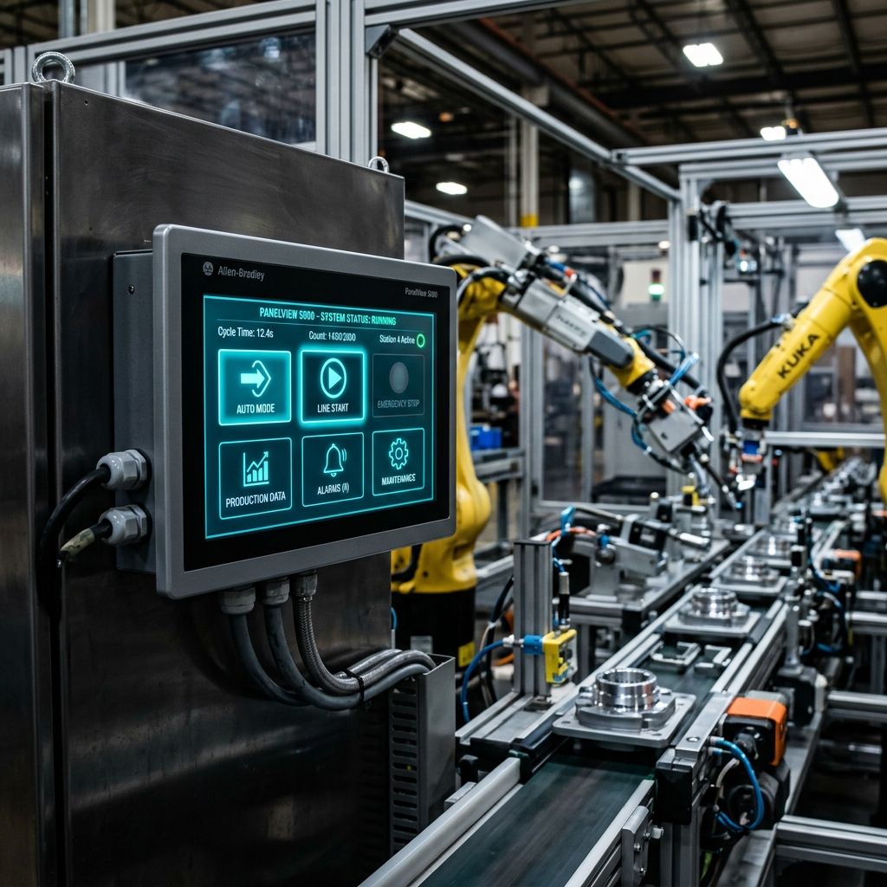

Guía de Migración de Pantallas HMI: De PanelView Plus a PanelView 5000
Publicado por el Equipo de Ingeniería de Robologix Automation | Saltillo, Coahuila
Resumen de Ingeniería:
La transición de terminales de operador legacy PanelView Plus 6/7 (programadas en FactoryTalk View ME) a la nueva plataforma PanelView 5310/5510 (desarrolladas en Studio 5000 View Designer) ofrece ventajas decisivas: integración directa con la base de datos de tags de Studio 5000 sin duplicar nombres, animaciones vectoriales de alto rendimiento y banners de alarmas preconfigurados alineados con la norma ISA 101.

Panel táctil de alta definición PanelView 5000 integrado en tablero de máquina.
1. Ventajas Clave de la Plataforma PanelView 5000
- Entorno Unificado en Studio 5000: La programación del PLC (Logix Designer) y de la pantalla HMI (View Designer) residen dentro de la misma suite de software.
- Sin Necesidad de Crear Tags Duplicados: La HMI navega y se suscribe directamente a los tags y UDTs del controlador Logix 5380/5580 en tiempo real.
- Gestión Automática de Alarmas: Soporta alarmas basadas en controlador Logix (Logix-based Alarms), eliminando la necesidad de crear tablas de alarmas secundarias en la pantalla.
2. Consideraciones para la Conversión de Pantallas
Dado que la arquitectura gráfica de Studio 5000 View Designer utiliza gráficos vectoriales modernos y controles estándar de alta resolución, la migración desde un proyecto .APA / .MER de FactoryTalk View ME requiere una estrategia planificada:
- Revisión de Dimensiones de Corte de Gabinete: Verificar si el nuevo modelo PanelView 5310/5510 coincide con el troquel físico existente en la puerta del tablero o si se requiere una placa adaptadora de montaje.
- Rediseño de Pantallas Bajo ISA 101: Aprovechar la migración para adoptar diseños HMI de alta situación de conciencia (High-Performance HMI), reduciendo distracciones visuales innecesarias para los operadores.
¿Por qué actualizar tu HMI con Robologix Automation?
Programación avanzada en Studio 5000 View Designer v30+ con gráficos vectoriales.
Suministro e instalación de marcos biselados de corte para evitar modificar la puerta del tablero.
Extracción y conservación de archivos .APA originales y respaldos de firmas digitales.
Artículos Técnicos Relacionados:
¿Tiene Pantallas PanelView Dañadas u Obsoletas en Nave?
En Robologix Automation realizamos diagnósticos de paneles HMI, conversión de proyectos y reemplazo de hardware sin paros de línea en Saltillo.
Solicitar Levantamiento de HMI